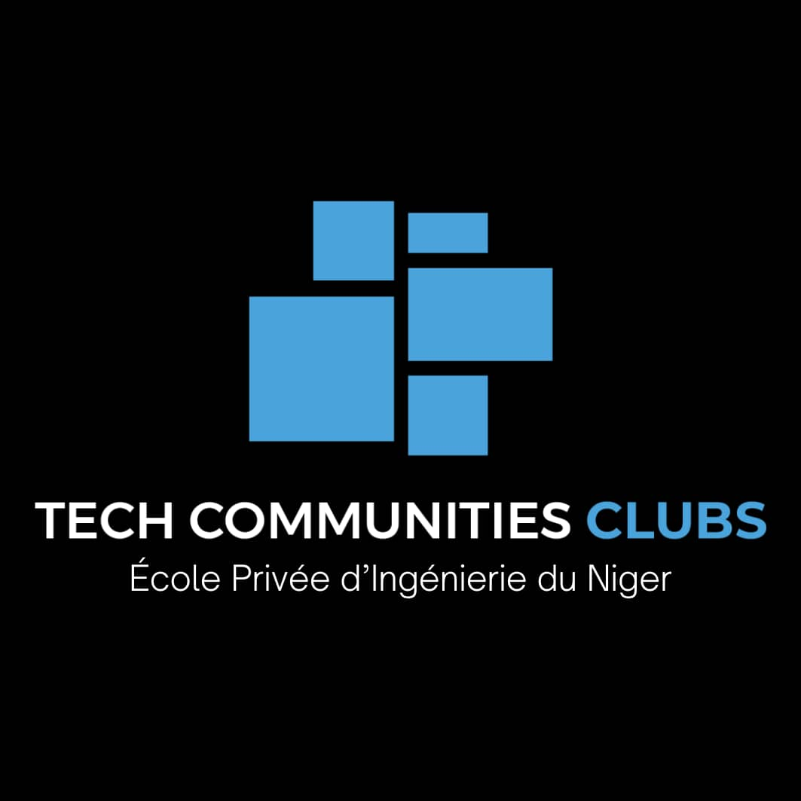

Bienvenue TCC-EPI NIGER

La TCC (Technology Community Club) de l'ÉpiNiger est un espace dynamique et inclusif dédié à tous les passionnés de technologie et d'innovation. Nous avons pour mission de créer une communauté où les étudiants peuvent apprendre, partager et collaborer autour des technologies de demain. Que vous soyez un développeur débutant ou un expert la TCC est le lieu idéal pour nourrir votre curiosité, développer vos compétences et élargir votre réseau. Notre club est ouvert à tous, quels que soient vos antécédents académiques ou vos projets personnels dans le domaine technologique
Les membres de la TCC-EPI NIGER